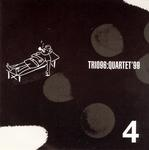

Home Artist links Label link

Trio96 - Quartet 99
| Artist: | Trio96 |
| Title: | Quartet 99 |
| Label: | Poseidon PRF-06/Musea FGBG 4546.AR |
| Length(s): | 31 minutes |
| Year(s) of release: | 2004 |
| Month of review: | [03/2005] |
Line up
Ishikawa Kenji - guitar
Tanaka Yasuhiro - drums
Yano Tomoaki - sax
Ejiri Hiromitu - bass
Tracks
| 1) | Nana (Up) | 6.37
|
| 2) | JB | 6.02
|
| 3) | 5 Beats | 6.51
|
| 4) | 9 Beats | 5.25
|
| 5) | Hayai Kyoku | 6.22
|
Summary
The name is a trio, but the band a quartet. That determines the title
of the album. As you can see from the names, they have from Japan.
The music
Nana (Up) is the first of the tunes on this mini album. It features
very much a live sound, with a rather dynamic, speedy sound.
The drummer for instance keeps a heady pace filling up as much as possible
in between, with the bass player bouncing along. The main instrument
is the guitar though, which is played very fast. Only later does the sax
set in. The overall feel is one of repetitivity, short, fast runs, with plenty
of groove. That does not mean this does not go anywhere. In fact, I was
pleasantly and enthusiastically strung along for the duration. The guitar
mainly stays away from aimless meandering, although, it has to be said, not
always.
JB is the next one up. Here the guitar is more rhythmic and the sax the
leading instrument. I like this a lot less. There is a lot hootin' and tootin'
going on, but the sax is an easy instrument to meander with. I thought the
first track to be quite a bit more appealing.
5 Beats is built on the same ingredients, however the sax comes out much
better due to better melodies and, for some reason, longer notes.
9 Beats alternates sharp tones from the sax with some relaxed notes interjected by the guitar.
It can pretty harrowingly sharp at times, and chaos steps in at the very
end of the track.
Hayai Kyoku closes down this mini album. Again, a very energetic tune.
I guess the guys in the band had places to go to on that same day.
Conclusion
This is dynamic jazzrock, led either by electric guitar or sax. It all sounds
very live (the booklet does say it was recorded in a studio),
with some limitations to the sound quality. The
playing is quite fresh, especially the rhythm section. The sax parts tend
to be quite meandering at times, although in places it does have a strong appeal. Overall this mini album has an enjoyable lightfootedness and flow, and as such is a nice document of jazz inspired rock. The lesser sound quality
might be a problem for some.
© Jurriaan Hage